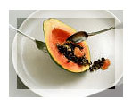

|
Viewpoint
For
Posterity's Sake?
by
Joie B. Alvarez
For
this term's issue of View Point, let us do away with the
political, global or even University-related issues. Let
us tackle something that everyone from ITC can surely relate
to. Let us have a healthy viewpoint.
For
several weeks now, the common buzzword in ITC is focused
on the fruitful effort of one of our colleagues. Everyone
she meets (not only in ITC) would certainly holler in surprise
the words "Mama, ang sexy mo na!" (Mama, you're
sexy now!). Almost everyone are in awesome wonder how Ms.
Catalina Quiogue (a.k.a. mama) managed to taper off those
pounds that, for years, have kept her from wearing clothes
every woman would love to proudly wear. And what keeps her
motivated to steadily melt the fats away?
Usually,
when we say "going on a diet," it means balancing
what we put into our mouth as well as what registers on
our scale. And that is what Ms. Quiogue has been doing for
several months now. From September 15, 2001, up to the present,
she was able to bring down her 150+ pound figure into a
thinly 126-pounder through proper diet and exercise. Up
to now, it has been a gradual loss that her body could very
well handle without a hitch. In an interview with mama,
she says that every pound she lost serves as her motivation
to keep going until she reaches her ideal weight of 120
pounds! It is also her long-term (can it still be considered
long-term?) goal to age with grace, that is, when she gets
old, she still wants to stay slim and sexy - ala lola Madonna!
With
a statistics that says - at least 300,000 preventable deaths
every year can be attributed to physical inactivity and
unhealthy eating (source: U.S. Centers for Disease Control
and Prevention), we can consider what mama has been doing
as a healthy option and not just pure vanity.
Physicians and dieticians nowadays use the Body-Mass
Index (BMI) to determine if a person is underweight,
overweight or in a healthy range. The BMI is an objective
scientific measure that uses a person's height and weight.
BMI can be calculated by dividing a person's weight in kilograms
by the square of his height in meters. However, BMI fails
to consider the lean body mass. It is possible for a healthy,
muscular individual, such as an athlete, with very low body
fat to be classified obese using the BMI formula. A BMI
of 20-25 is considered healthy. Below 20 is underweight
while above 25 should consider dieting. A BMI of over 30
puts a person at risk of heart disease, high blood pressure,
diabetes, and some cancers. A person with this BMI should
seriously consider losing weight through a change in diet
and increasing exercise.
However,
proper diet should also be complemented with exercise. I've
read in an article, that San Diego State University tests
view that Americans are plump partly because their neighborhoods
are not 'walkable.' The situation could very well apply
here in our country although the reasons might not be very
much the same. In the US, the large distances of houses
to businesses, stores, and restaurants forces the Americans
to use the car instead of walking. Here in the Philippines,
(aside from the distance) warm weather, muddy streets (rainy
season) or dusty road (summer), or just plain laziness are
some of the factors that push us to take the car, tricycle,
or side car to wherever we need to go. And, more often than
not, use the elevator to climb up the second or third floor.
We take for granted the benefits of walking to our health.
It is important to remember that a sedentary lifestyle (which
majority of us have) is a risk to heart disease not to mention
the lechon, bagoong, cheeseburgers, and pizza that do not
fail to do their part. We should put in mind that walking
is the most convenient and the cheapest way to exercise.
As
our age and weight increase, our risks to health problems
also increase. Most likely, what we sow while we are young
are what we will reap when we grow old. It is better to
practice preventive rather than curative measures. Remember,
health is wealth!
Want
to know Cata's secret diet plan? (click
here)
|